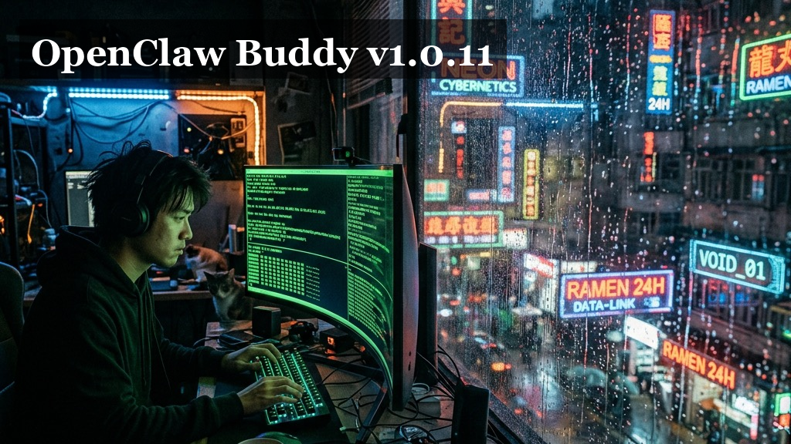

“有些人觉得，改变是为了让人适应环境。但对我来说，改变是为了让环境适应人。”
“1.0.11 的工坊里，我们不再谈论宏大的叙事，我们谈论的是那一丝拖动的顺滑，是深夜里那一抹深邃的暗，是跨越语言时的那份坦然。”
“当窗口可以随心而动，当色彩在暗夜里流转，那一刻，我才感觉到这个空间是属于我的。我们在追求一种‘无感’——无感的切换，无感的对齐，无感的守护。”
“有些东西，不用说，它就在那里。就像那 70 多个补全的词条，跨越了语言，只为了那一份默契。”
“五月六日，细节觉醒，于细微处见众生。”
🔖 当前版本: v1.0.11
📅 发布日期: 2026-05-06
🆔 基准代码: 220ffbb
🆔 当前提交: ddf1257
💠 核心主题: 交互布局进化、全局视觉统一、全量国际化补全、系统健壮性加固。
💡 大白话：现在整个网页的暗黑模式都对齐了，看着更高级。侧边栏没用的标签藏起来了，放到了底部的状态条里，移动端看着也整齐多了。
💡 大白话：现在的弹窗和窗口可以随便拖来拖去了。以前那个点名（Mention）弹窗闪烁的问题也修好了。编辑器里还加了个“一键复制全部”的按钮。
💡 大白话：我们把之前漏掉的英文翻译全给补上了，足足 70 多个地方。现在用英文版也不会看到莫名其妙的中文了。
1. 逻辑与渲染优化 ⚡
2. 系统自愈与健壮性 🛡️
| HASH | DESCRIPTION |
|---|---|
| ddf1257 | feat(web): 运行状态环境 tag 样式统一 |
| 38474e4 | feat(web): 环境标签迁至运行状态条 |
| ca67825 | fix(guardian): 自愈避让安装与诊断进程 |
| c95c590 | docs: README 徽章指向正确仓库 |
| 247cbc8 | fix(v3): 忽略 session 消息相位避免误锁 |
| 3bc1256 | fix(web): 侧栏品牌区与子菜单样式统一 |
| 694e339 | fix(web): 移动端布局与暗色底统一 |
| 0fe9f6d | fix(web): Web 全局暗色体验补齐 |
| f21614f | feat: 补全 70+ 个缺失的英文国际化词条 |
| ff83c5d | 优化：完善 V3 聊天界面布局联动体验 |
| d8a9d64 | 修复：V3 聊天 Mention 弹框搜索闪动等 Bug |
| 9f0459f | feat(文件浏览器): 新增「复制全部内容」按钮 |
| 0bbbdd6 | fix: 修复消息过滤依赖缺失 Bug |
| 220ffbb | feat: 文件浏览器和终端窗口支持拖动移位 |